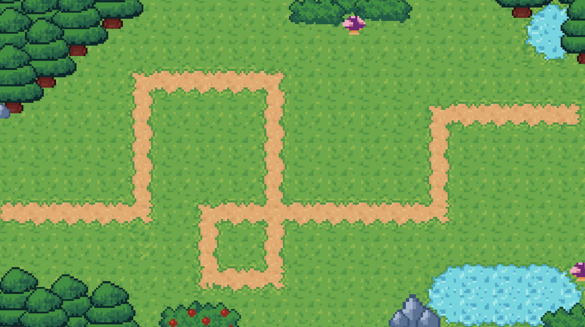

Bloons Tower Attack (BTA)
Bloons Tower Attack (BTA) é um Reverse Tower Defense inovador onde você assume o papel da Mente Coletiva (Bloonarius). Ao contrário dos jogos tradicionais, aqui você comanda as hordas de Bloons, gerenciando recursos e escolhendo o momento estratégico para lançar suas tropas e superar as defesas automatizadas dos macacos.
História
Após décadas de conflito sendo atingidos por dardos e feitiços, resíduos de borracha, bloontonium e hélio acumulados nos campos de batalha sofreram uma mutação inesperada. O que antes era apenas gás, tornou-se uma rede neural: os Bloons despertaram.
Você não é apenas um balão, você é Bloonarius — a personificação dessa consciência de colmeia. Sua missão é liderar a reconquista de territórios perdidos, coordenando o ataque contra o império militar dos primatas em uma luta pela sobrevivência e soberania dos Bloons.
Gameplay
Neste jogo de estratégia no estilo tower defense, o jogador assume um papel inverso ao tradicional: em vez de defender, ele é responsável por enviar ondas de inimigos ao longo de um percurso predefinido. O objetivo é superar as defesas adversárias escolhendo cuidadosamente o tipo, quantidade e momento de envio das unidades.
Cada rodada exige decisões táticas, combinando diferentes características dos inimigos, como velocidade, resistência e comportamento, para explorar pontos fracos do oponente. Conforme o jogo avança, novos tipos de unidades e desafios são introduzidos, aumentando a complexidade e exigindo adaptação constante.
Com uma progressão baseada em fases, o jogador precisa equilibrar risco e estratégia para alcançar a vitória, tornando cada partida uma experiência dinâmica e desafiadora.
Imagens



Contato
Inquiries: txneto2005@protonmail.com
Web: https://eliorodrigues.github.io/Presskit/